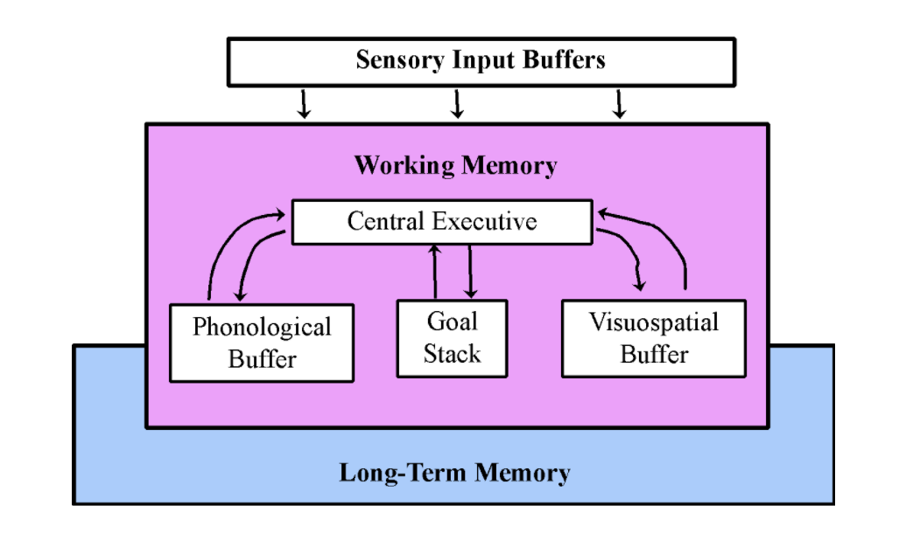
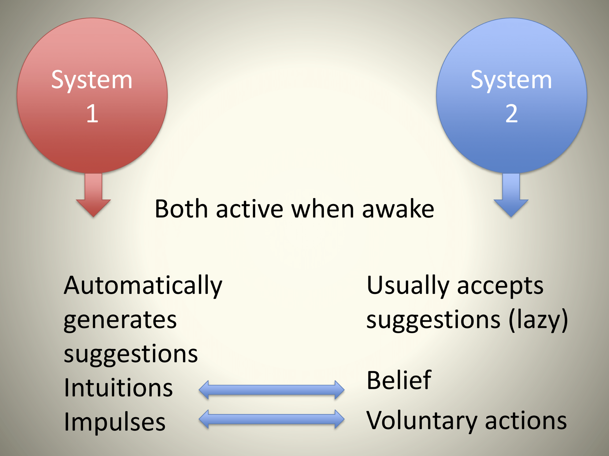
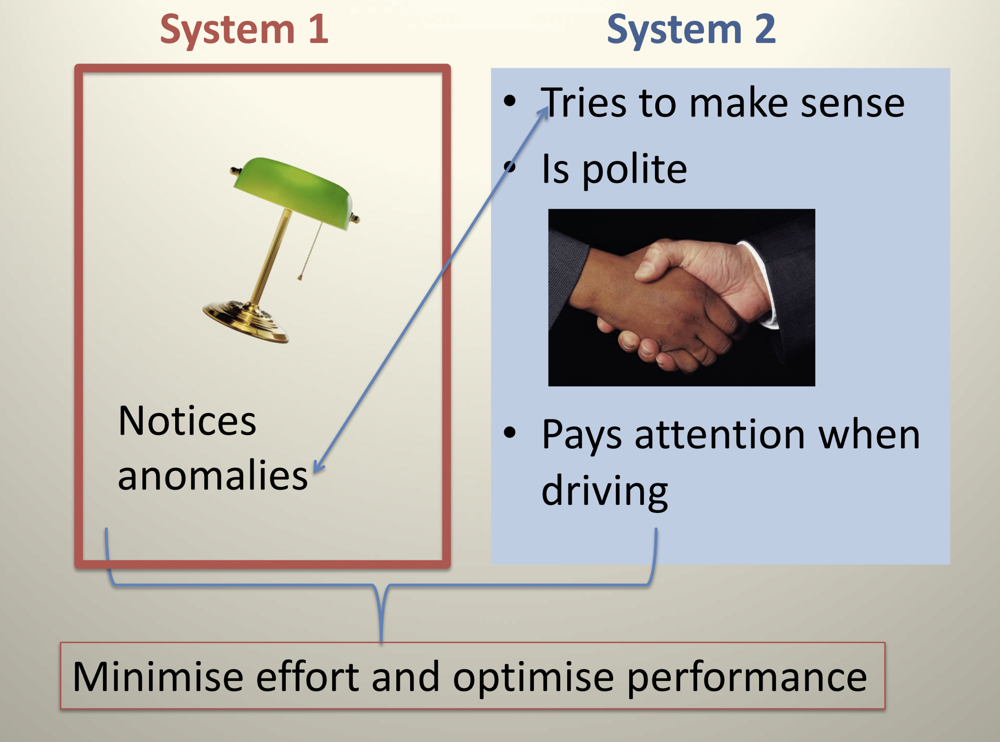

Introduction
In the 1970s believed that people are generally rational, with strong emotions being the cause departure from rationality. Since then behavioral psychologists and economists have developed a different view based on an analysis of how we think. TFS describes two systems of thought that synthesizes this understanding of the mind’s dual operations: System 1 and System 2. These two Systems play the role of distinct characters in the book, with unique personality attributes who both cooperate yet compete for control of our attention and behavior.
To isolate the behavior of System 1, consider the picture

In fairly effortless manner, we are able to surmise several facts about this woman: she is angry and quite likely to say unkind words in a loud and harsh voice. This assessment came to mind instantaneously without effort, and is an example of fast thinking.
On the other hand, consider the question
17 X 24 =
We can immediately identify this as a multiplication problem, and are aware there exists a paper and pencil solution. We can recognize that 12,000 is too big and 123 is too small to be the answer. However, without further thought it is unlikely that we can surmise the correct solution was not 568. In order to carry out the analysis a different mode of thinking needs to ensue – slow thinking. You will retrieve from memory a cognitive program learned in school for carrying out multiplication. You effortfully need to carry out a sequence of steps, retaining numbers in working memory to hold onto intermediate results which feels like a temporary strain. The overall process of mental work is deliberate, effortful, and orderly, a prototype of slow thinking. The effects of slow thinking were not only felt in the mind – it had physical impact on you – your muscles would have tensed, blood pressure rose, heart rate increased, and pupils dilated, which all would have relaxed upon when you found the right answer.
System 1 and System 2
Other examples of System 1 and System 2 in action include:
Table 1
| System 2 | System 1 |
|---|---|
|
|
|
|
|
|
|
|
|
|
|
|
|
|
|
|
|
|
|
|
|
|
|
As TFS describes it
“System 1 operates automatically and quickly, with little or no effort or sense of voluntary control”
*“System* 2 allocates attention to the effortful mental activities that demand it, including complex computations. The operations of System 2 are often associated with the subjective experience of agency, choice, and concentration”.
The key theme of the book is that whereas our self-identities (and the ideal aspects of Homo Economicus) are bound in the version of our System 2 selves, System 1 in fact drives the lion’s share of our everyday thoughts and actions. A key focus of the book then is to investigate the specific tendencies of System 1 to reach judgments and make choices which are fast, often intelligent, but exhibit systematic biases. The other question the book considers are the capabilities of System 2 that are directed towards control and the correction of the automatic processes of System 1.
The key distinguishing characteristics between System 1 and System 2 can be describe more fully as follows.
| System 1 (Intuitive) | System 2 (Reflective) |
| Process Characteristics Automatic Effortless Associative Rapid, parallel Skilled action |
Process Characteristics Controlled Effortful Deductive (formal rules of reasoning) Slow, serial Rule application |
| Content Characteristics Affective (emotional) Causal propensities (relationships) Concrete, specific Prototypes |
Content Characteristics Neutral Statistics Abstract Sets |
Heuristic Reasoning Homo Economicus
The Stroop Task
A useful way to recognize the simultaneous joint existence of these two systems of thinking, consider the “Stroop Task”:
Direction: State the color in which each word is printed.
The “Stroop effect” is that Set 3 is much slower than Set 1 or Set 2 to complete. Why is Set 3 harder than Set 1 or Set 2? We can understand the effect through the joint operations of System 1 and System 2.
An explanation of the Stroop Effect based on the above schematic is as follows. Reading is a highly practiced, automatic skill. System 1 thus accesses the word meaning (concept of red
or concept of blue) quickly and automatically. This process is involuntary and cannot easily be suppressed or inhibited. The task instruction itself (in the directions) requires following a rule: “Name the font color”. The System 2 rule processing is slower than the automatic reading process of System 1. There is a response conflict between saying “blue” when looking at red . Also, there is conflict between saying “red” when looking at a blue . The response conflict in turn causes slower response.
Stroop effect exemplifies two concurrent processes of thinking:
Automatic process -> extracting the meaning of “blue”
Controlled process -> identifying the color of “blue”
Reading the word meaning cannot be voluntarily inhibited and a difficulty occurs when an automatic process (extracting the meaning of a color word) conflicts with a rule-governed process (naming the color). A key idea is that the automatic and controlled processes can both occur at the same time, and sometimes they come into conflict. Herein will lie a key source of tension that cause human departures from Homo Economicus: Heuristic reasoning conflicts with rule-based reasoning and can sometimes dominates.
Gorilla Experiment
Another phenomenon that reveals is the tension between System 1 and System 2 is this famous experiment by Chabris and Simmons.
The experiment shows that both System 1 and System 2 compete for the finite attentional resources of the mind. These attentional resources can be associated with the “working memory” module in the schematic model of cognitive resources below (taken from Hastie and Dawes, 2010). For System 2 to perform, it has to assume resources of working memory (through its executive function and control), threby limiting the capacities available for System 1.

Interaction between System 1 and System 2.
How are System 1 and System 2 linked? TFS explains the connection rather astutely (p. 24):
In the story I will tell, System 1 and 2 are both active whenever we are awake,. System 1 runs automatically and System 2 is normally in a comfortable low effort mode, in which only a fraction of its capacity is engaged. System 1 continuously generates suggestions for System 2: impressions, intuitions, intentions, and feelings. If endorsed by System 2, impressions and intuitions turn into beliefs, and implulses turn into voluntary actions. When all goes smoothly, which is most of the time, System 2 adopts the suggestions of System 1 with little or no modification…. When System 1 runs into difficulty, it calls on System 2 to support more detailed and specific processing that may solve the problem of the moment.
Examples of problems that activate System 2’s involvement include all those listed on Table 1, which can range from solving a math problem, exhibiting self-control in specific social situations, heightened awareness/concentration when driving at night, or when an anomaly/risk presents itself suggesting an error is about to be made (among others). The common pattern is that some friction in System 1’s usual function is an invitation of System 2 to act.
There is one massive problem – System 2 is lazy! Given the choice, it errs on the side generally (although with considerable individual heterogeneity) towards inaction, e.g., it abides by the “law of least effort”. To appreciate this tendency towards a lazy state, refer back to the cognitive schematic – the control of the attention and working memory by System 2 for deliberative thinking requires effort and work. Thus both self-control and cognitive effort are forms of mental work. This leads to a phenomenon of ego-depletion: “activities that impose high demands on System 2 require self-control, and the exertion of self-control is depleting and unpleasant.” Difficult System 2 work, whether cognitive reasoning or self-control, in-fact consumes blood glucose.
In a remarkable study published in the Proceedings of the National Academy of Sciences on Israeli judges shows some perverse consequences of ego-depletion. In this legal setting, there are parole judges reviewing applications for parole, and each application is considered for 6 minutes each. The default decision is a denial (so they are deliberating to overturn a denial). On average 35% approved, however 65% approved immediately after a meal which dwindles to nearly 0% before next meal. The pattern is depicted in the findings from the paper below.

There is considerable individual heterogeneity in the natural tendency of System 2 to exert effort for executive control over System 1. Consider one of the more famous experiments in the history of psychology: the Walter Mischel cookie/marshmallow experiment
This suggests there are at least two different dimensions of System 2 discussed by Stanovich and West in their book Rationality and the Reflective Mind. One is intelligence – the sheer ability to excel in slow thinking and computation. The other is rationality, which is challenged by the degree to which System 2 wants to be lazy, which also varies at the individual level and features of what the authors call the reflective mind.
The effort expended by System 2 in relation to the effortless automation of System 1 provides some understanding as to why human cognition evolved this way? As TFS explains (p. 25)
The division of labor between System 1 and System 2 is highly efficient: it minimizes effort and optimizes performance. The arrangement works well most of the time because System 1 is generally very good at what it does: Its models of familiar situations are accurate, its short-term predictions are usually accurate as well, and its initial reactions to challenges are swift and generally appropriate. System 1 has biases, however, systematic errors that it is prone to make in specified circumstances. One further limitation of System 1 is that it cannot be turned off.
The interaction can be described graphically as followed

Moreover this interaction is efficient - e.g., it minimizes effort to make approximately satisfactory judgments and decisions.

The difficulty arises when System 2, due to the underlying effort involved in its operation, does not “catch” an intuition or suggestion from System 1 that does not accord with the standards of reasoning of Homo Economicus! In that case, intuitions translate to beliefs, and suggestions into actions, and an inefficiency in human decisions will exist. We will examine next just how such beliefs come into being and operate faster than System 2 can often control.